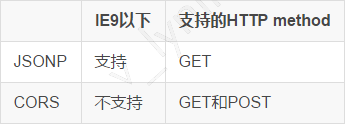

原文连接:https://www.cnblogs.com/hbxylcy/p/12058965.html
一、如何优化
用户在访问网页时， 最直观的感受就是页面内容出来的速度，我们要做的优化工作， 也主要是为了这个目标。那么为了提高页面加载（或者渲染）速度呢？一般来说有三个方面：
1、代码逻辑：优秀的代码逻辑结构可以有效减少渲染页面使用的内存和速度（比如虚拟DOM），此方面不在本文讨论范围内。
2、SSR服务器渲染，也就是所谓的“直出”。将首屏所有内容在服务器端渲染成html静态代码后，直接输出给浏览器，可以有效加快用户访问站点时首屏的加载时间。不过此方面也不在本文讨论范围内。
3、提升静态文件的加载速度，这是本文会讨论的点，而这方面大致又可分为下面几点：
— 加快静态文件下载速度
— 减少静态文件的文件大小
— 减少静态文件请求数量，从而减少发起请求的次数（对于移动端页面来说，请求的开销比网速的开销要大）
（一）代码压缩
最常规的优化手段之一。
我们在平时开发的时候，JS脚本文件和CSS样式文件中的代码，都会依据一定的代码规范（比如javascript-standard-style）来提高项目的可维护性，以及团队之间合作的效率。
但是在项目发布现网后， 这些代码是给客户端（浏览器）识别的，此时代码的命名规范、空格缩进都已没有必要，我们可以使用工具将这些代码进行混淆和压缩，减少静态文件的大小
这里我们选择使用Webpack，具体会在后面介绍。
（二）文件合并
在npm流行的今天，前端在进行项目开发的时候，往往会使用很多第三方代码库，比如jQuery，axios，weixin-js-sdk，lodash，bootstrap等等，每个库都有属于自己的脚本或者样式文件。
按照最老的方式的话，我们会用<script>标签或者<style>标签分别引入这些库文件，导致在打开一个页面的时候会发起几十个请求，这对于移动端来说是不可接受的。
在减少文件请求数量方面大致有以下三方面：
1、合并js脚本文件
2、合并css样式文件
3、合并css引用的图片，使用sprite雪碧图。
对于雪碧图 ，我们可以把页面上用到的多个细碎的小图片合并成一个大图片，把N个图片请求合并成了一个。然后在css样式中指定图片偏移，来实现显示不同的图片，如下图：
这里我们继续选择使用Webpack，具体会在后面介绍。
（三）gzip
我们的文件在压缩合并之后，文件大小和文件数量都有了客观的减少。但是一旦站点业务逻辑多了，或者引入的第三方库多了之后，对于移动端来说，文件大小还是不太乐观。
这个时候就是gzip压缩登场的时候啦~我们在webpack的配置中增加gzip压缩配置：
上面代码会对文件大小大于10240，并且压缩率好于0.8的js、css文件进行gzip压缩，执行打包代码后生成结果文件如下：
我们可以看到除了原有的js和css文件外，我们还得到了压缩后的gz文件。
把所有这些文件一起部署到服务器上。（当然也可以直接nginx或其他web server配置gzip压缩）
我们可以看到vendor.[hash].js文件的大小显著减少，从318kb减少到了不到100kb。
（四）CDN和缓存
为什么使用CDN?
CDN 是一个全球（或者只有国内，具体看供应商）分布式网络，它把网站内容更快地传递给服务范围内的一个具体位置，而往往这个具体的位置离实际的内容服务器距离很远。举个极端点的例子，你的网站主机在爱尔兰（海南），而你的用户则在澳大利亚（漠河）访问。这时当你的用户访问你的网站的时候，延迟会很大，把你的（静态）数据用 CDN 放到澳大利亚（漠河）则会很大程度上提高用户访问网站的体验。
如果没有CDN服务，我们可以添加Expires头，减少DNS查找，配置ETag，使AjaX可缓存。
（五）安全方面: CSP
web前端对于xss安全漏洞一定不陌生。我们知道Javascript语句甚至是css表达式都可能导致xss攻击，现在很多前端会使用CSP策略来进行脚本源的限制防御。
而我们由于使用的cdn域名和业务域名不一样：
cdn域名：https://cdn.xxx.qq.com
业务域名：https://xxx.qq.com
我们可以：
1. 在index.html静态入口文件的meta http-equiv头中做配置；
服务器端直接返回相应的HTTP response header头信息；
例如：
这里除了指定了cdn的域名源，告诉浏览器从这个域名加载的js文件都是可信的。同时因为我们使用的webpack打包压缩代码后的一些特性，我们还需要加上'unsafe-inline'标识。
使用CSP策略我们可以指定浏览器安全解析script、css、fonts、media等资源的源与方式。
参考资料有：
Content Security Policy Reference
二、webpack2.0
使用webpack2最重要的地方就是使用它tree-shaking的特性。这个特性对于ES6的module管理有着非常优美的优化，大概能减少30%左右的包体积。
ES module和CommonJS的require模块管理不同，前者是基于静态的，而后者是动态的。
CJS：
允许动态同步 require()
导出仅在模块执行后才知道
导出可以在模块初始化后添加，替换和删除
ES module：
只允许静态同步 import
在模块执行之前，导入和导出已经关联
导入和导出是不可变的
现在我们来看一下如何使用webpack：
代码压缩
我们自己写的代码因为在开发时需要遵循一定的代码规范，所以会有很多多余的换行和空格字符，甚至是便于阅读的长变量名，这些其实对于机器（浏览器）来说，都不是必要的。所以我们可以把这些都干掉。比如我们写的代码可能是这样的：
接着我们就使用Webpack来进行压缩。首先，需要在工程根目录的package.json（相信使用过npm包管理的前端同学一定不陌生）文件中添加webpack的依赖配置：
各个工程应该按需引入需要的loader和webpack-plugin库。有一点需要注意的是：webpack本身是没有对各个类型的文件进行分析处理的能力的，这个时候我们需要使用各种第三方库的loader，比如css-loader等（当然我们也可以自己编写loader）。同时webpack也有强大的第三方Plugin插件供我们对文件进行进一步处理。
接下来我们就可以在scripts中指向的脚本文件里编写webpack对应的构建代码了。
例如在webpackConfig配置中的plugins属性数组中，我们可以添加以下配置：
而最终生成的文件结构如下：
我们可以看到所有样式代码被压缩后抽离到了一个app.[hash].css文件中，所有js逻辑代码按照业务逻辑和第三方库被抽离到了app.[hash].js和vendor.[hash].js文件中。
被打包文件的内容也已经被webpack压缩混淆，减少了加载文件的Content Size。
关于其他的webpack用法配置，可以查询官方文档和中文文档，这里就不一一详细说明了
目前webpack3 和webpack4使用了新的方式打包代码，可以进一步提升js在浏览器中的执行效率。
三、题外话
跨域方面: CORS
我们知道由于现代浏览器安全策略的不断完善，对跨域请求的限制也是各种各样。
当我们保存在静态资源文件中的script对其他域名发起请求时就会遇到跨域问题，如果没有做任何措施，请求会被浏览器拦截。
当前主流的跨域解决方案主要是JSONP和CORS

由表可见，随着前端不断发展，CORS跨域是大趋势。
CORS需要被请求端根据请求者的host，与白名单比对后返回正确的HTTP response header头信息。
详情内容建议阅读MDN的官方文档
四、优化效果的验证
为了能够对前端优化效果有一个系统的验证，凭借肉眼来感受页面响应速度肯定是远远不够的，我们可以通过一些针对服务器性能测试的产品来验证页面的响应时间，这里推荐一个“压测大师”。可以通过配置访问过程中的最大人数，获取访问后的性能效果，如图：
腾讯WeTest压测大师对包含Web，H5等页面准备了针对性的方案，解决了多数压测人员Web页面压测的问题。
压测大师服务了包括王者荣耀、龙之谷手游、轩辕传奇手游、火影忍者等多款高星级手游，也包括QQ、NOW直播等明星产品，通过基于真实业务场景和用户行为进行压力测试，帮助开发者发现服务器端的性能瓶颈，进行针对性的性能调优，降低服务器采购和维护成本。
为了让外部更多产品能够享受到简单易用的压测产品，腾讯WeTest决定将这份服务器测试能力产品化，以产品”压测大师“的形式，正式对外开放。目前更有低至四折的时效资源包优惠，欢迎大家使用！
点击链接：http://wetest.qq.com/gaps/ 即可使用。
本文出自： https://www.cnblogs.com/wetest/p/7738862.html
如果对使用当中有任何疑问，欢迎联系腾讯WeTest企业QQ：800024531